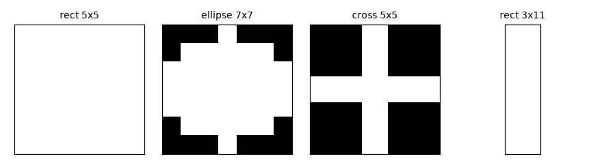
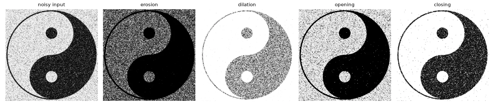
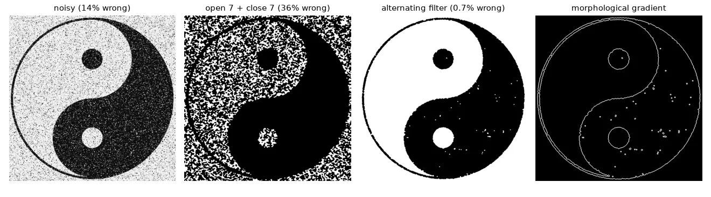
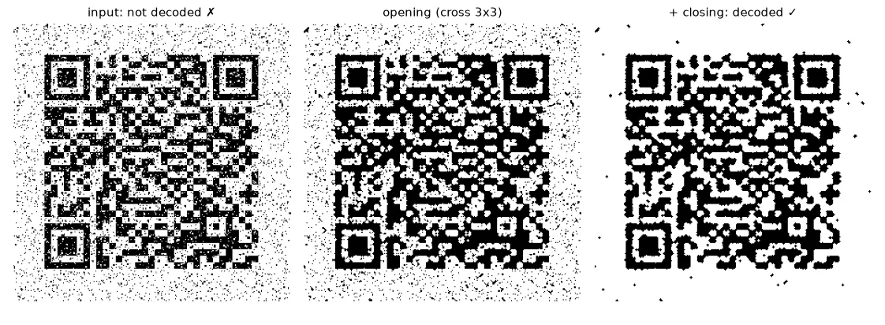
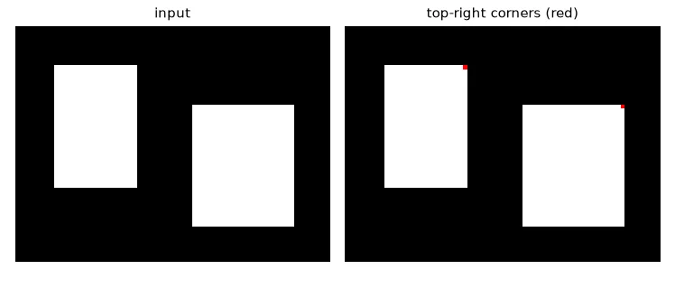

Shapes, not intensities#
Filters of lesson 05 compute weighted sums. Morphology asks set questions: does a small shape — the structuring element (SE, or kernel) — fit inside the white region at this position? Does it touch it? That makes it ideal for cleaning up binary images after a threshold, and for measuring shapes.
k_rect = cv2.getStructuringElement(cv2.MORPH_RECT, (5, 5))
k_ellipse = cv2.getStructuringElement(cv2.MORPH_ELLIPSE, (7, 7))
k_cross = cv2.getStructuringElement(cv2.MORPH_CROSS, (5, 5))
k_line = cv2.getStructuringElement(cv2.MORPH_RECT, (3, 11)) # (width, height)
print(k_cross)

Erosion and dilation#
With \(I\) the set of white pixels and \(K_x\) the kernel centred at \(x\):
Erosion keeps a pixel white only if the whole kernel fits in the white region: white objects shrink, white specks vanish. Dilation makes a pixel white if the (reflected) kernel touches any white pixel: objects grow, black holes fill.
A neat way to compute them: for every "on" cell \((d_y, d_x)\) of the kernel, shift the image by that offset; erosion is the AND of all the shifted copies, dilation is the OR.
def erode(img, k):
"""White at x only if the kernel, centred at x, fits entirely inside the white set."""
b = img > 0
kh, kw = k.shape[0] // 2, k.shape[1] // 2
padded = np.pad(b, ((kh, kh), (kw, kw)), constant_values=True)
out = np.ones_like(b)
for dy, dx in zip(*np.nonzero(k)): # AND of shifted copies, one per kernel cell
out &= padded[dy:dy + b.shape[0], dx:dx + b.shape[1]]
return out.astype(np.uint8) * 255
def dilate(img, k):
"""White at x if the (reflected) kernel centred at x touches the white set at all."""
b = img > 0
kh, kw = k.shape[0] // 2, k.shape[1] // 2
padded = np.pad(b, ((kh, kh), (kw, kw)), constant_values=False)
out = np.zeros_like(b)
k_ref = k[::-1, ::-1]
for dy, dx in zip(*np.nonzero(k_ref)): # OR of shifted copies
out |= padded[dy:dy + b.shape[0], dx:dx + b.shape[1]]
return out.astype(np.uint8) * 255
def opening(img, k): # erosion then dilation: removes small white specks
return dilate(erode(img, k), k)
def closing(img, k): # dilation then erosion: fills small black holes
return erode(dilate(img, k), k)
def morph_gradient(img, k): # dilation - erosion: the outline of every shape
return cv2.subtract(dilate(img, k), erode(img, k))
All four operations are pixel-identical to cv2.erode, cv2.dilate and cv2.morphologyEx, which the script checks.
What went wrong in my first erosion
I wrote if not k.all() and window.all(). That ignores the kernel's shape (a cross or a disc has zeros in it) and only compares whole windows. The definition says: the window must be white wherever the kernel is 1 — window[k == 1].all().

| Operation | Definition | Effect on white objects |
|---|---|---|
| Opening | \(\delta(\varepsilon(I))\) | removes white parts smaller than the kernel |
| Closing | \(\varepsilon(\delta(I))\) | fills black holes and gaps smaller than the kernel |
| Gradient | \(\delta(I) - \varepsilon(I)\) | outlines of every shape |
| Top-hat / black-hat | \(I - \text{open}(I)\) / \(\text{close}(I) - I\) | small bright / dark details (lesson 05's barcode) |
Cleaning very noisy shapes#
The yin-yang below has 14% of its pixels flipped. The obvious recipe — a big opening to remove the white specks, then a big closing for the black ones — fails: the white half is so riddled with black specks that the opening eats it. The solution is an alternating sequential filter: close and open with a growing kernel, so every step only has to deal with specks slightly larger than those already removed.
truth = np.where(U.imread("morphology/yin_yang.png", cv2.IMREAD_GRAYSCALE) > 127, 255, 0).astype(np.uint8)
def error(img):
return 100 * np.mean(img != truth) # % of wrong pixels
def ellipse(k):
return cv2.getStructuringElement(cv2.MORPH_ELLIPSE, (k, k))
# One big opening followed by one big closing: the opening erases the white half too,
# because it is riddled with black specks (13% of its pixels).
naive = cv2.morphologyEx(cv2.morphologyEx(noisy, cv2.MORPH_OPEN, ellipse(7)), cv2.MORPH_CLOSE, ellipse(7))
# Alternating sequential filter: close/open with *growing* kernels, so each step only
# has to remove specks slightly bigger than the ones already gone.
asf = noisy
for k in (3, 5, 7):
asf = cv2.morphologyEx(asf, cv2.MORPH_CLOSE, ellipse(k))
asf = cv2.morphologyEx(asf, cv2.MORPH_OPEN, ellipse(k))
outline = cv2.morphologyEx(asf, cv2.MORPH_GRADIENT, k_cross)
print(f"error: noisy {error(noisy):.1f}% open7+close7 {error(naive):.1f}% ASF {error(asf):.2f}%")
error: noisy 13.7% open7+close7 36.0% ASF 0.72%

Making a QR code readable#
A QR code is just black and white squares, so noise inside a module can be removed with a kernel smaller than a module. To measure success, we ask OpenCV's QR decoder:
qr = U.imread("morphology/QR_code.png", cv2.IMREAD_GRAYSCALE)
detector = cv2.QRCodeDetector()
def decode(img):
# QR readers need a white "quiet zone" around the code
padded = cv2.copyMakeBorder(img, 40, 40, 40, 40, cv2.BORDER_CONSTANT, value=255)
text, points, _ = detector.detectAndDecode(padded)
return text or None
k3 = cv2.getStructuringElement(cv2.MORPH_CROSS, (3, 3))
qr_bin = cv2.threshold(qr, 0, 255, cv2.THRESH_BINARY + cv2.THRESH_OTSU)[1]
qr_open = cv2.morphologyEx(qr_bin, cv2.MORPH_OPEN, k3) # white noise inside black modules
qr_clean = cv2.morphologyEx(qr_open, cv2.MORPH_CLOSE, k3) # black noise inside white modules
for name, im in [("input", qr), ("cleaned", qr_clean)]:
print(f"QR {name:<8} decoded:", decode(im) is not None)

Two practical lessons: the kernel must be smaller than one module (a 5×5 kernel starts eating the thin black lines), and decoders need a white quiet zone around the code — I had to pad the image with a white border before it worked.
Hit-or-miss: finding patterns#
Hit-or-miss looks for an exact local configuration. The kernel has three values: \(1\) = must be white, \(-1\) = must be black, \(0\) = don't care. It is two erosions: the foreground eroded by the "1" cells AND the background eroded by the "−1" cells.
def hit_or_miss(img, kernel):
"""kernel: 1 = must be white, -1 = must be black, 0 = don't care."""
fg = img > 0
hits = erode(fg.astype(np.uint8), (kernel == 1).astype(np.uint8)) > 0
misses = erode((~fg).astype(np.uint8), (kernel == -1).astype(np.uint8)) > 0
return (hits & misses).astype(np.uint8) * 255
corner = np.array([[0, -1, -1],
[1, 1, -1],
[0, 1, 0]]) # top-right outer corner of a white shape
shapes = np.zeros((60, 80), np.uint8)
cv2.rectangle(shapes, (10, 10), (30, 40), 255, -1)
cv2.rectangle(shapes, (45, 20), (70, 50), 255, -1)
found_mine = hit_or_miss(shapes, corner)
found_cv = cv2.morphologyEx(shapes, cv2.MORPH_HITMISS, corner)

Counting objects#
After cleaning, connectedComponentsWithStats labels every white blob and returns its area, bounding box and centroid — the bridge between pixels and objects:
blobs = cv2.morphologyEx(noisy, cv2.MORPH_OPEN, k_cross)
n, labels, stats, centroids = cv2.connectedComponentsWithStats(blobs)
big = [i for i in range(1, n) if stats[i, cv2.CC_STAT_AREA] > 500] # label 0 is the background
print(f"{n - 1} white components, {len(big)} larger than 500 px")
Exercises#
- Find the smallest square kernel for which the QR code stops being readable. Relate it to the module size in pixels.
- Write
hit_or_misskernels for the four outer corners (usenp.rot90) and count the corners of every rectangle in an image. - Use the morphological gradient of the cleaned yin-yang and
cv2.findContoursto measure the perimeter of each half.